Case study 03 · CRM / ERP
Construction & Interior Design FirmCRM / ERP
A CRM / ERP for a Delhi construction & interiors studio: BOQ quotes priced from its 569-item rate card, sent as a link the client can accept, and a project plan in one step once a quote is won.
- Live since May 2026
- AI-assisted build
- Status
- Live since May 2026 on the studio’s own domain
- My role
- I gathered the requirements, made the product decisions, directed AI coding tools and tested every change, over about two months
- Built with
- Laravel · Filament · Livewire · MySQL
- Note
- Shown as built: what it does and what was checked on the live install. No usage figures are claimed.

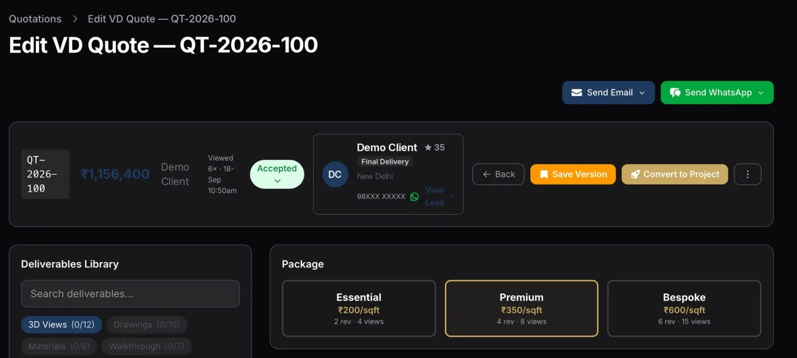
01 · In short: One system to carry a job from BOQ quote to handover.
SNC is a construction and interiors studio in New Delhi. I designed this CRM / ERP to put its quoting and project delivery in one system, on the studio’s own domain. The brief had three parts:
- Price every BOQ line from the studio’s rate card.
- Send each quote as a link the client can accept.
- Turn a won quote into a project plan in one step.
02 · What it does
Lead pipeline, two tracks
Each enquiry follows the Turnkey or the Virtual Design pipeline, with lead scoring (Hot / Warm / Cold), SLA tracking, qualification, source attribution and task templates.
BOQ quotations
A bill-of-quantities quote built from a lead (sections, rate items, materials, margins, payment milestones), previewed as a branded proposal and shared as a link the client can review and accept.
Project delivery
A won quote becomes a project with milestones, tasks, snags, payment tracking and a client portal for progress and file exchange.
Material & rate masters
The 569-item BOQ rate library (33 sections) and a material catalogue across trades, with default vendors and margins.
Procurement
Contractors, material suppliers, vendor and contractor bids, and service contracts.
Discovery calls
A public booking page with Google Meet links, and each call tracked from booked to attended.
HR & operations
Staff, roles & permissions, monthly attendance and salary, incentive dashboards, internal tasks, communication templates and a letterhead / PDF generator.
03 · What makes it different
- Every BOQ line comes from the rate card. 569 priced items in 33 sections; project-management and design fees, then GST, are added on top.
Checked 5 Oct 2026
- One link to approve the quote. The client opens one link to review and accept it, and the studio sees how often each quote was viewed.
- A won quote becomes the project in one step. The project, its task plan and its milestones are created together (verified once on the production install).
- One portal to follow the build. Each project gets a client page that shows progress milestone by milestone.
- Vendor bids per project. Requests to contractors and suppliers, with quotes received and the winner recorded.
- HR in the same system. Monthly attendance and salary for studio staff sit beside the projects.
04 · What the business can configure: Built so the studio sets the rules.
- Lead configuration
- Funnels, sources, assignment rules, SLA targets, task templates and site-survey templates.
- BOQ rate library
- The studio’s rate card as a 569-item, 33-section library that turnkey quotes price from.
- Material catalogue
- Purchase and sell prices, margins and default vendors across trades.
- Payment milestones
- A milestone schedule per track.
- Virtual Design deliverables
- A tiered catalogue (essential / premium / bespoke).
- Communication templates and letterhead
- The studio’s own templates and a letterhead / PDF generator.
- Roles & permissions
- Who can see and do what.
- Incentives
- A points scoreboard and payout log, designed so points can convert to paid leave or cash.
05 · Key screens
Screens: white-labelled demo copy, fictional data, unless marked live.
01Quote to won

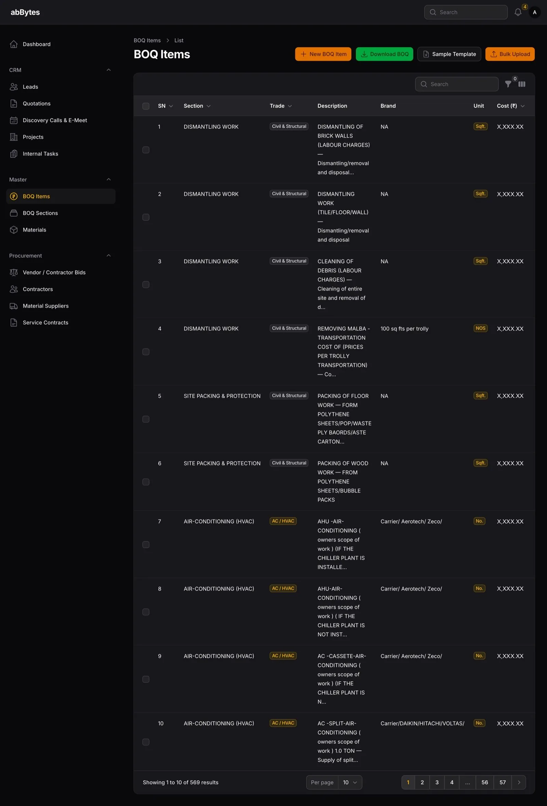

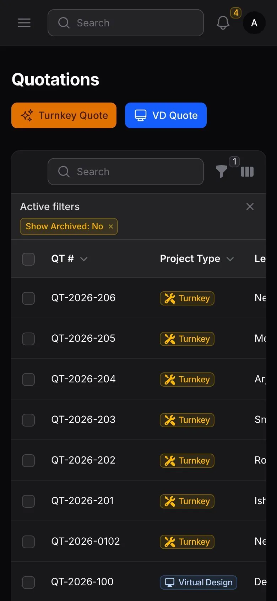
02What the client sees

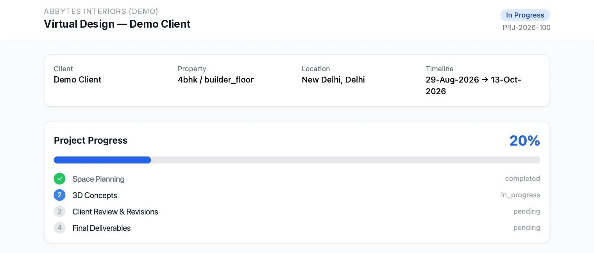

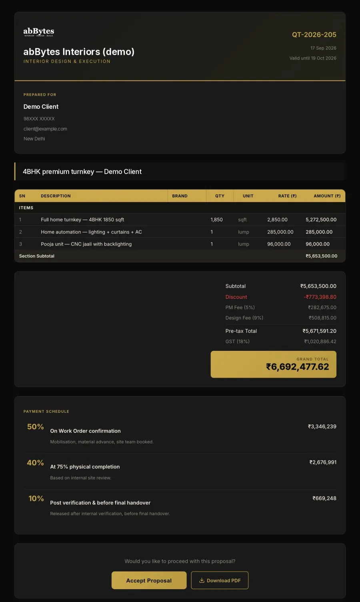
03After the win

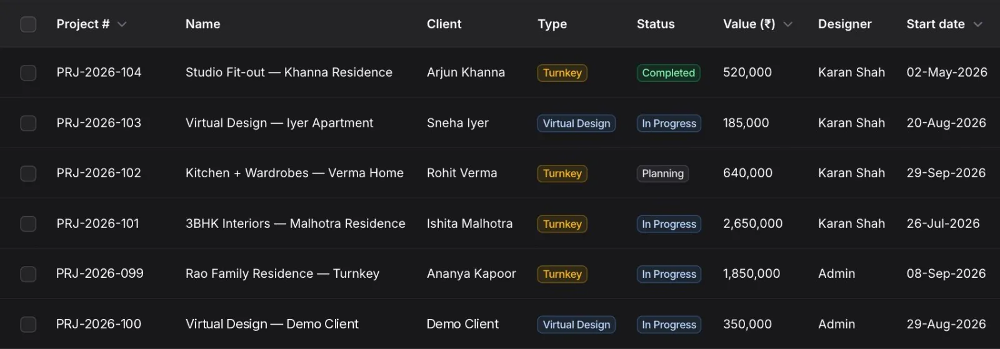

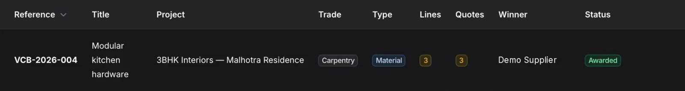
04The rules behind it

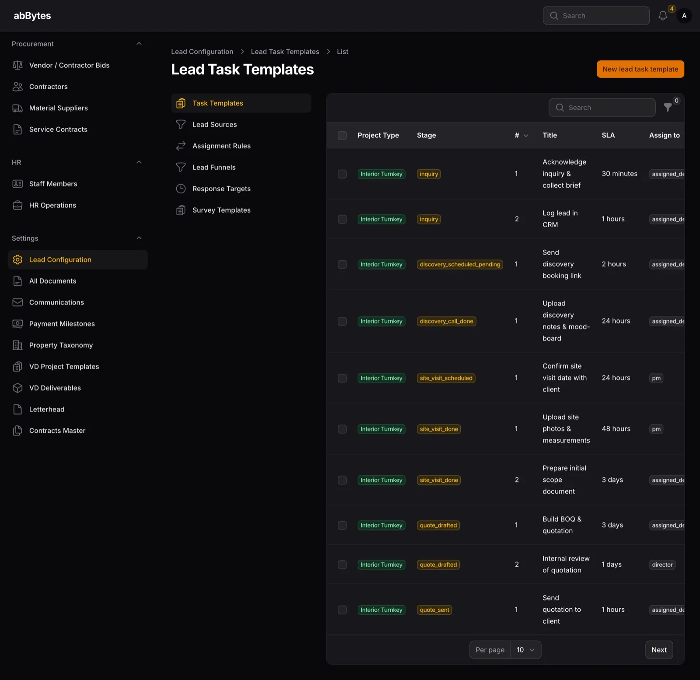

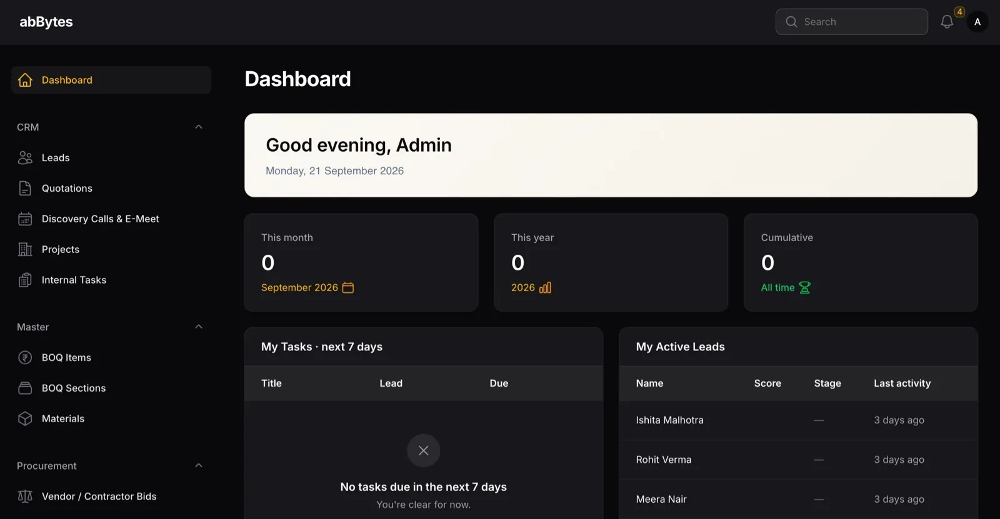

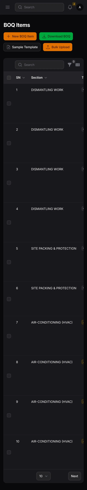
06 · Where it stands, dated
Live since May 2026. Shown as built.
569
rate items behind every BOQ line
Production · checked 5 Oct 2026
33
sections in the rate library
Production · checked 5 Oct 2026
1 step
from a won quote to a project with its task plan and milestones
Verified once · production install
≈ 2 months
to build, AI-assisted, before it went live in May 2026
Live since May 2026
Not usage results
Install checks and built-in features only. No usage figures are claimed.
07 · How it was built
- RoleGathered requirements, made the product decisions, directed AI coding tools and tested every change
- MethodAI-assisted build
- TimelineAbout two months; live since May 2026
StackLaravel · Filament · Livewire · Alpine.js · Tailwind CSS · MySQL · PDF generation · role-based access control
08 · Links & PDF
- Project showcasegithub.com/abBytes-sudo/interior-design-crm-showcase
- Interactive demoabbytes-sudo.github.io/interior-design-crm-showcase
- The studio’s websiteCase study 06 · Construction & Interior Design Firm — website
Screens are from a white-label demo build: a placeholder brand (“abBytes”, not a real company), fictional people and placeholder figures; layouts match the live system.
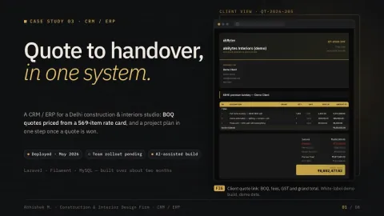